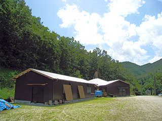

| 猪風来美術館「陶芸教室年間会員」募集中！ |
猪風来美術館では、陶芸大好きで土ひねりを存分に楽しみたい方を対象に「陶芸教室年間会員」を募集中です。
「陶芸教室年間会員」は、いつでも好きな時に何回でも作陶できます。
［Ａ］縄文野焼きコースは、＜縄文土器を作ってみたい＞＜縄文の文様を知りたい＞＜縄文土偶を作ってみたい＞
＜創作意欲のまま自由な表現でオブジェを作りたい＞そんな方々にお奨めです。
子供から大人まで年齢に関係なく楽しめます。
［Ｂ］電気窯コースは法曽粘土を使用し、＜日常使える自分だけのオリジナルの器を作りたい＞
＜法曽焼の干支や箸置きなど作りたい＞＜電動ろくろで器に挑戦してみたい＞そんな方にお奨めです。
| ※陶芸体験学習創作館の利用時間は、美術館開館日の午前９時３０分～午後５時になります。 |
|  |